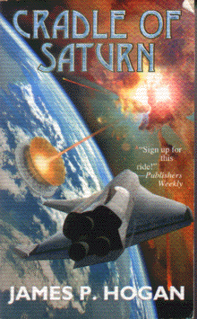

Cradle of Saturnby James P. Hogan
publisher: Baen Publishing
Fiction, 524 pages | 
(book cover art, Copyright © James P. Hogan)
|
Return to the Book MenuPrevious|Next
Description:
The Kronians, humans who now live in orbit around Saturn, have attracted some of the finest scientific minds on Earth. But when they suggest that Jupiter has periodically ejected planet-sized chunks of material at intervals that coincide with cataclysmic events in earth's fossil record, few people on Earth will take them seriously. But when Jupiter proceeds to do just that, the question is not who is right, but who will survive to tell the tale...
Recommended for: people unafraid of a slightly longer read; people interested in celestial events' impact on humanity, survivalists, people who liked the movie Armageddon.
Did-you-read questions:
Deadline: February 1, 2005.
These should be easy questions, but you should have the questions ready and keep an eye out during your reading. Each question should be answered with 1-2 sentences.
Note: these questions are not probably not the most important part of the book! Your essay will not have to cover these questions!
- According to the Kronians, what event inspired the Greeks' story of Athena springing from Jupiter's head?
- What is in the box that Keene brings aboard Osiris?
- What does Voler allege Keene did when he visited Osiris?
- What surprising decision does Keene make at LAX?
- Who confronts Keene at Amspace?
Report Questions:Deadline: Peer Review Session on February 8, 2005; paper due February 10, 2005.
You should write a 3 - 4 page essay on one of the following questions. Your essay should include examples and references to the book, unless otherwise specified. Page number references are sufficient for citing material from the primary book. If you use outside materials, cite your sources in full. If you would rather write on a different topic, you may, but clear it with Mr. Howe or Ms. Sullivan first.
- This story has been divided up into three parts -- each of which has a very different feel. Which is the most compelling? The most realistic? The most character-driven? Do these pieces fit well together, or was this like reading three separate books?
- Although men play a major role in this story, there are several major women's roles, as well. Do you think the author portrayed them well?
- How did this book make you feel? Did it stir up an emotional response (or several)? describe what you found particularly stirring or poignant.
- Do you think this was a realistic story? What rang true or rang false for you?
Graphic and Presentation:
Deadline: February 21 - March 3, 2005.You will give a 10 minute presentation on both of the following:
- Convince your peers that they should (or should not) read this book. (This may include a brief summary of the book.) Give examples of what was cool or worthwhile in the book, and what you got out of it (or didn't).
- Describe a (realistic) science idea that you learned about in this book, citing information from at least 2 external sources (other than the dictionary). If you would like help choosing or understanding an idea from your book, you are invited to come talk to Mr. Howe or Ms. Sullivan.
Note: This presentation should not be just a reading of your paper!Along with this presentation, you should have a graphic that will go with it. A Power Point presentation is recommended, but if you have a special idea for a something else, such as a model, an original video presentation, or a well done drawing/ painting/ sculpture/ etc., you may do so, provided it involves a similar level of effort and polish. Speak to Mr. Howe or Ms. Sullivan first if you are considering an alternate graphic format to the Power Point.
Return to the Book MenuPrevious|Next